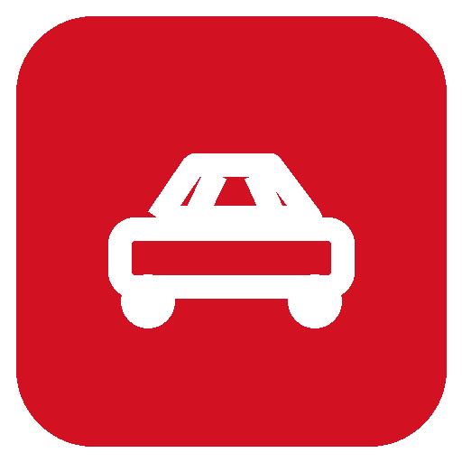

CartalogCatálogo + operação comercial
Seu estoque.
Seu negócio.
Um só lugar.
Plataforma para revendedoras criarem sua presença digital, publicarem veículos e atenderem oportunidades com uma equipe conectada.
O problema
Vender carros exige mais do que anunciar carros.
Estoque, presença digital, equipe e atendimento precisam conversar entre si.
Site desatualizado
Cadastrar veículos e manter o catálogo confiável custa tempo para a loja.
Leads dispersos
Sem fila e histórico, oportunidades se perdem entre canais e vendedores.
Gestão fragmentada
Dono, equipe e plataforma precisam de permissões e ferramentas próprias.
A proposta
Uma plataforma para a jornada inteira da loja.
Vitrine pública
Catálogo por subdomínio com veículos, páginas e identidade da empresa.
Operação
Gestão de estoque e leads em telas web claras para o dia a dia.
Configuração
Desktop para dono da loja e administradores globais.
Atendimento
Vendedores acompanham e atualizam os leads na web e no mobile.
Papéis e permissões
Cada pessoa vê o que precisa para cumprir seu papel.
Equipe Cartalog
Recebe pedidos de demonstração, cria empresas e donos, administra planos, assinaturas e acessos globais.
Dono da loja
Configura a empresa no desktop, cadastra vendedores e veículos, distribui leads e controla a manutenção do site.
Vendedor
Atende leads na web e no mobile: assume, registra conversas e atualiza o status.
Do interesse à loja ativa
O cadastro começa com uma demonstração.
Formulário
Visitante solicita demonstração na landing institucional.
Pedido salvo
API registra a solicitação no PostgreSQL e tenta enviar ao e-mail comercial configurado.
Equipe Cartalog
Administrador global avalia o contato e cria empresa e conta do dono.
Loja ativa
Dono entra pelo e-mail, configura a loja e cadastra vendedores.
Aplicativo Electron
O centro de configuração do dono da loja.
Vendedores
Cadastro, ativação e desativação. Leads de vendedores desativados voltam para a fila.
Veículos
Cadastro e edição com fotos, categoria, opcionais e estado de publicação.
Minha loja
Marca, cores, tipografia, banners, páginas públicas e dados da empresa.
Modo manutenção
Oculta o catálogo público e pausa a entrada de novos leads enquanto a loja prepara alterações.
Painel global
A equipe Cartalog governa todas as empresas.
Empresas e donos
Criação de lojas e contas de acesso pelo painel global, com login próprio.
Planos e assinaturas
Cadastro e gestão manual do vínculo comercial de cada empresa.
Solicitações e auditoria
Visão dos pedidos de demonstração, administradores globais e histórico de ações.
Experiência web
Um site que apresenta a loja e uma área que faz a operação andar.
Catálogo da loja
Veículos por subdomínio, detalhes e imagens, páginas publicadas, marca e formulário para captar leads.
Dashboard
Visão operacional, estoque e gestão de leads. O vendedor atende no navegador; o dono acompanha e distribui.
Fluxo comercial
Do primeiro contato à decisão final.
Novo lead
Interessado envia contato pelo catálogo público.
Fila
Dono atribui ou vendedor cadastrado assume.
Histórico
Vendedor registra ligação, WhatsApp, e-mail e observação.
Status
Atualização até ganho ou perdido, com motivo obrigatório para perda.
App do vendedor
Atendimento no bolso, conectado à mesma API.
Login por e-mail
Acesso restrito a vendedores ativos cadastrados pelo dono da loja.
Fila e carteira
Busca, filtros, assumir e devolver oportunidades.
Ficha do lead
Contato, veículo, mensagens, atalhos, interações e atualização de status.
Uma fonte de dados
Quatro interfaces, um backend.
JWT e permissões
Login por e-mail; API valida papéis e escopo em cada operação sensível.
Multiempresa
Dados de cada loja associados à empresa; slug usado para identificar o catálogo público.
Marca da revendedora
O Cartalog é vermelho. Cada loja pode ter sua própria identidade.
Cores e tipografia
Personalização do catálogo público com as escolhas da loja.
Banners e páginas
Construtor de páginas públicas com blocos de abertura, texto, imagem e botão.
Logo, contatos e SEO
Informações principais da loja salvas na API e refletidas no site.
Preparação para demonstrar
O instalador entrega o app. A operação precisa de API e banco.
Desktop .exe
Instala o cliente Electron. Ele se conecta à API; o arquivo sozinho não cria banco nem hospeda o sistema.
Build para Mac
O .exe não abre no Mac. Para apresentação, o projeto pode rodar pelo código com Node e Docker; distribuição requer pacote macOS.
APK interno
Build via EAS/Expo, enviado ao aparelho por link ou arquivo. O celular também precisa alcançar a API.
Roteiro ao vivo
Mostre o fluxo real em cinco passos.
Landing
Enviar pedido de demonstração.
Global
Criar ou abrir a empresa no painel Cartalog.
Desktop
Configurar loja e vendedor.
Catálogo
Ver veículo e gerar lead.
Vendedor
Assumir e atualizar na web ou no celular.
Cartalog · 2026
Da vitrine ao atendimento.
Uma operação conectada para revendedoras: catálogo próprio, gestão central e vendedores com acesso onde trabalham.